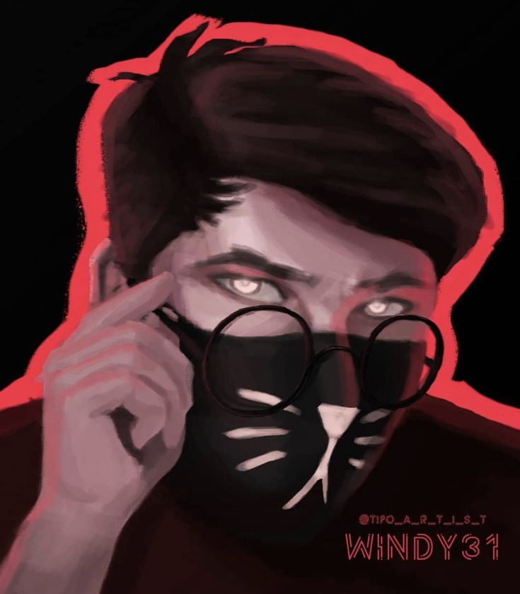
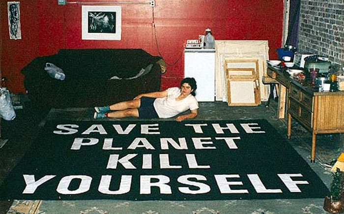
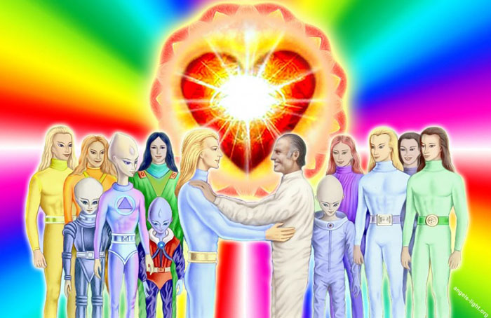
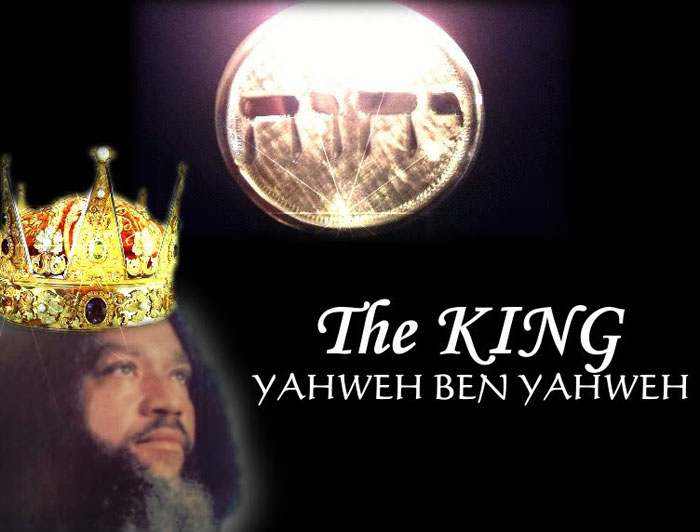

Культ Хаоситов

Юморостическое общество подписщиков видео-блогера Windy31. Их задача распростроняться и кричать "Слава Хаосу!". Всё.
Культ Креативности
К сожалению, расизм и религия часто пересекаются, и появляются культы, подобные культу Креативности. Эта религия для белых похожа на Ку-клукс-клан, проповедует верховенство белых. Движение еще называют «Мировой церковью креативистов».
Церковь эвтаназии

Это больше политический культ. Его миссия - установить на Земле баланс между человеком и животными. Он пытаются достучаться до людей и обратить их внимание на проблему перенаселения. В этой церкви существует правило – «ты не должен порождать себе подобного» и «спаси планету – убей себя».
Люди Вселенной

«Люди Вселенной» - это чешский культ, который пропагандирует веру в инопланетян и телепатическое общение с внеземными цивилизациями. Члены культа верят в то, что силы дьявола будут уничтожены благодаря вмешательству инопланетян.
Нация Яхве

Культ основан афроамериканцами с еврейскими корнями, которые верят в то, что вернутся на свою родину, Израиль. Этот культ не исповедует ни христианство, ни иудаизм, но верят в сына Бога, Яхве бен Яхве. Культ обвиняют в том, что в «белых» людей вселился дьявол, а истинными наследниками Иисуса являются только «черные».